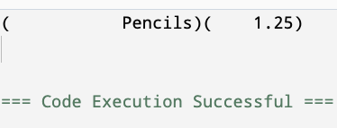
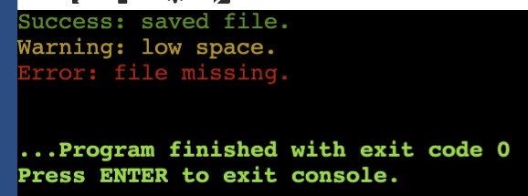
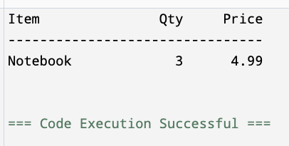

C++
coutcincout sends text, values, and line breaks to the terminal.cout is the standard output stream.
Use the insertion operator << to send each piece of output into the stream.
cout comes from the <iostream> header.
cout prints the current value stored in the variable.Several output pieces can be chained in one statement.
Each << sends the next item to the terminal from left to right.
Multiple cout statements can build one visible output box.
endl ends the line and flushes the output stream."\n" ends the line without forcing a flush.cout sends output to the terminal.<<.cin reads typed input from the terminal and stores it in variables.cin is the standard input stream.
Use the extraction operator >> to pull typed data into a variable.
cin comes from the <iostream> header.
Most input follows a two-step pattern.
The prompt explains what the program expects before cin waits.
cin reads according to the receiving variable’s type.
If the input cannot be converted, the read fails.
One statement can read several values in order.
The user can type both values on one line separated by whitespace.
cin >> skips leading whitespace and stops at the next whitespace.
If the user types Maya Chen, only Maya is stored. The space stops the read.
If the user types data that does not match the variable type, cin enters a failed state.
After a failed read, the variable is not updated with useful input.
If the user types Maya Chen, fullName stores Maya and Chen remains waiting for the next read.
Chen is left in the input stream, so the age read fails when it expects a number.
cin reads terminal input into variables.cin >> treats whitespace as a separator.cout control spacing, alignment, and decimal precision.Many output manipulators live in <iomanip>.
Use this header when output needs columns, alignment, or fixed decimal places.
setw(n) sets the width for the next printed item.left and right control alignment inside a field.fixed switches decimal output to fixed-point notation.setprecision(n) controls the number of digits after the decimal when used with fixed.setw(n) sets the width for the next item only.
The next value is padded with spaces if it is shorter than the requested width.
left and right control how values sit inside a field.
Labels often read best left-aligned; numbers often read best right-aligned.
Periods show the spaces that the terminal normally leaves blank.
left pads after the label; right pads before the number.
fixed prints floating-point values with a fixed number of digits after the decimal.
This prints money-like values with two decimal places.

setw(n) affects only the next printed item.fixed, setprecision(n), left, and right stay active until changed.The width is applied separately to each value.
Periods show the spaces added by each setw(8) call.
Periods show padding spaces. In the actual terminal, those positions are blank.
setfill(ch) changes the padding character used by setw.boolalpha prints Boolean values as true or false instead of 1 or 0.showpoint forces a decimal point to appear for floating-point values.scientific prints floating-point values in scientific notation.hex, dec, and oct switch integer output between base 16, base 10, and base 8.<iomanip> when output needs formatting.setw creates columns; fixed and setprecision control decimals.An ANSI escape code is a short string that tells the terminal to change how text is displayed.
This code switches the following terminal text to red.
Most simple foreground color codes follow this shape.
\033 is the escape character.[ starts the control sequence.COLOR is the numeric color code.m ends the sequence.\033[030m black\033[031m red\033[032m green\033[033m yellow\033[034m blue\033[035m magenta\033[036m cyan\033[037m whiteThe reset code returns the terminal to normal output.
If you do not reset, later output may keep the previous color.
Named constants make color output readable.
The name explains the purpose better than the number alone.
Use color to reinforce meaning, not to decorate every line.
#include <iostream>
#include <string>
using namespace std;
int main() {
const string RED = "\033[031m";
const string GREEN = "\033[032m";
const string YELLOW = "\033[033m";
const string NORM = "\033[0m";
cout << GREEN << "Success: saved file." << NORM << endl;
cout << YELLOW << "Warning: low space." << NORM << endl;
cout << RED << "Error: file missing." << NORM << endl;
return 0;
}
NORM after colored output.Pick widths based on the longest expected item.
Start with slightly generous widths and adjust after seeing real output.
The header and each row should use the same widths.
A separator gives the eye a boundary between headings and data.
Keep separator length close to the total table width.
#include <iostream>
#include <iomanip>
using namespace std;
int main() {
cout << fixed << setprecision(2);
cout << left << setw(14) << "Item"
<< right << setw(8) << "Qty"
<< setw(10) << "Price" << endl;
cout << "--------------------------------" << endl;
cout << left << setw(14) << "Notebook"
<< right << setw(8) << 3
<< setw(10) << 4.99 << endl;
return 0;
}
cout sends text, variable values, and line breaks to the terminal.cin reads typed input into variables and treats whitespace as a separator.<iomanip> control width, alignment, and decimal precision."\n" or endl intentionally; both create a new line, but endl also flushes.endl when the input should appear on the same line.string variable and one int variable.string input until full-line input is introduced.cin >> name to read a full name with spaces.cin need to know the receiving variable’s type?<iomanip> only when formatting tools are needed.fixed << setprecision(2) for money-like values.setw applies only to the next item.setprecision(2) to mean two decimal places without fixed.double so it always prints two decimal places.setw to right-align three numbers.const string values.NORM after every colored message.CISP 400 · Fowler